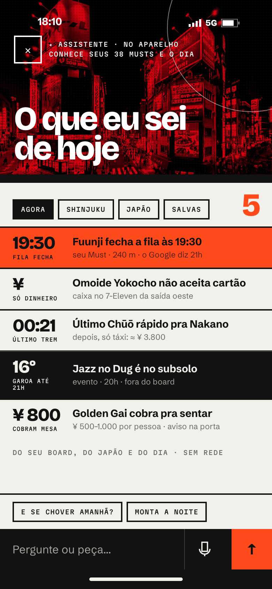
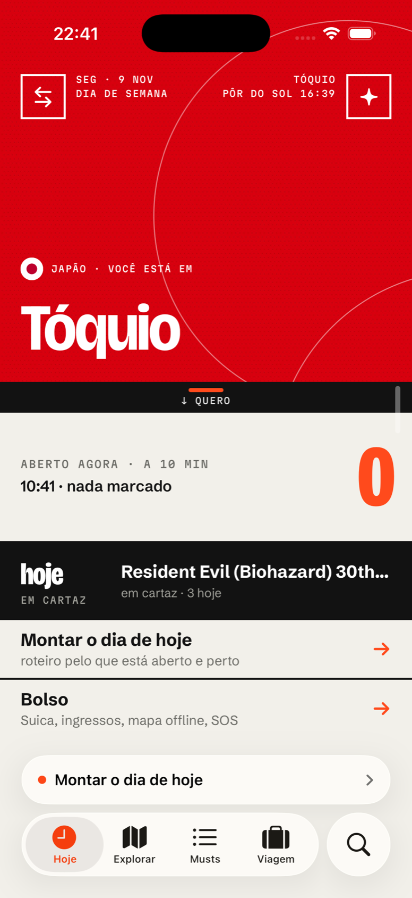

Barra nativa (TabView): Hoje · Explorar · Musts · Viagem, com tint laranja na aba ativa. Esconde ao rolar pra baixo e volta ao subir.
Lupa, separada à direita (papel de busca) = Quero · Guardar. Em cima, o campo do quero; embaixo, "ou guarde": Link · Vídeo · Texto · Ingresso · Presente, e "Buscar por nome". Não existe mais o botão + nem segurar o + pra montar o dia.
Faixa "agora" logo acima da barra, como o mini player do Música: "Agora: Gyoen · saia às 15:10"; sem dia, "Montar o dia de hoje". Tocar abre a Linha (ou o Montar). Some nas telas sem barra: Montar, Ir, Lugar, SOS e quero aberto.
Guia virou a página de bairro do Explorar; o mapa completo (busca, mapas offline) fica na rota .mapa.


| coisa | casa | portas |
|---|---|---|
| Assistente | tela cheia, por cima da aba atual | ✦ no canto superior direito de todo bloco de foto (capa, Lugar, Lista, Explorar, Presentes) · ← na capa · "Continuar no Assistente" no quero · Siri / must://assistente |
| Dicas | primeira página do Assistente | as mesmas do Assistente; filtros Agora · bairro · país · Salvas. Some como tela própria. |
| Quero… | fenda laranja sob o bloco | puxar ou tocar a régua com pegador (capa, Lugar, Lista, Explorar) · tocar no nome do bairro · lupa da barra |
| Bolso | tela empilhada: Atalhos no topo, grade do Bolso embaixo | linha "Bolso" na capa · → na capa · alça na borda direita · Lugar › "caixa perto" |
| SOS | tela tinta (fora do corte) | primeira faixa do Bolso · Viagem (linha fixa) · Quick Action do ícone · Live Activity à noite. Nunca liga sozinho. |
| Ingressos | Viagem › Próximos | lupa › Ingresso · Share Extension · Bolso (hoje) · Lugar › Ingresso · Live Activity no dia |
| Presentes | Viagem › Presentes (lista fácil) | lupa › Presente · campo "Novo presente…" na própria lista · quero "presente/comprar…" · linha laranja na capa quando a loja está a 10 min · micro-parada na Linha do dia |
| Explorar | aba 2 | barra · mapa completo pela rota .mapa · Lugar › "no mapa" abre o recorte com o pino · Guia/Linha do dia › bairro |
| Montar o dia | tela cheia (sem barra) | faixa "agora" ("Montar o dia de hoje") · linha da capa quando não há dia · Linha do dia |
| Grupo | Viagem, logo abaixo de Presentes | Pessoas · Votar (cartaz "A ou B?") · Acertar contas · Mandar o dia; tudo pelo compartilhar do iOS, sem servidor |
| Minhas viagens | tela cheia | ⇄ no canto superior esquerdo da capa · Viagem (linha fixa) · Ajustes › Viagem |